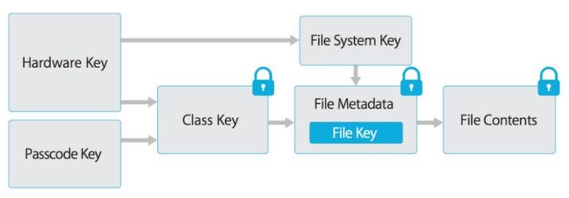
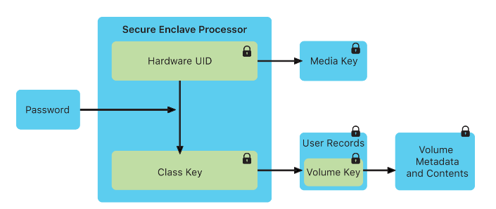

Applications or even OS itself doesn’t know the keys that are protected by Secure Enclave. OS only sees Keychain, but the Security Enclave is separated. It’s asked to decrypt the information and it does just that returning the decrypted information.
Hardware
Imagine that there lives a vicious criminal 🦹 who’s stealing and deleting puppy photos from a preschool server. It’s a nasty bussiness that can get him in jail if he’s not cautious. He likes to keep everything on the mobile phone he has with him all the time even in the bathroom 🚽 and while taking a shower 🚿 (he’s very careful). He considers the photos to be completely safe since he has set up a PIN for the device only he knows. All his secrets and stuff that can potentially throw him into jail are all on this little piece of harware.
But suddenly some other guy rats 🐀 him out (because he is sure that’s beneath his dignity to do such a damage for little kids) and serious and righteous people in suits are comming to your home with a warrant 📄. Well, this criminal 🦹♀️ still thinks: “Hey, suckers, I’ve got everything on my mobile phone which is secure as hell. All other devices are completely wiped.”. How wrong would this assumption be? What if he had an old Android device? Or may be a iPhone 5S? Or iPhone 4? Is there really a difference? What if the only reasonable assumption in this case would be for him to pack ciggies 🚬 for the jail?
One of the main things to think about when answering the question: is the mobile phone’s NAND or NOR (i.e. non-volatile storage) encrypted? If it’s not, then, my dear fellow, he is in trouble. One could just extract this precious little chip and insert it into another device. Now they don’t need his passcode, they’d only require theirs or even none at all.
Alright, say, he was not complete dump and was smart enough to get himself a device📱that uses fulldisk encryption. Is this attack still feseable? Well, depends on where the key 🔑 is stored. If it’s, for example, stored at 0x0000000 address of this NAND, then it’s just the question of extracting this chip, reading 📖 the first bytes and decrypting the contents. So, how and where to store this key in order to make this at least harder?
This is what Apple has been doing for a while. It got so overwhelmed with this task that it happened to end up protecting its endusers even from themselves.
Back then mobile devices had several basic parts: CPU, some storage chip (NAND or NOR) and some other pieces used to make it possible to use this for talking and SMS-ing. Apple has decided to apply the least-privilege policy here again and restrict the enduser to only those tasks he or she can possibly want to do. It’s a phone afterall. Why modifying OS? You don’t need it. Make you calls and be happy.
Modern Apple iDevices have two AES engines: one is for Secure Enclave only, another one is used both for SE and Application Processor.
Intro
When the device is manufactured, a 256-bit AES key is written to Secure Enclave. Before some veresions of Apple devices these UIDs were randomly generated and them fused to the chip. However at the moment they are generated by SE during manufacturing and fused using special software. There is no API (neither software, nor hardware) that is able to get it from there, used only by the processor’s hardware AES engine. This UID key is unique for each device.
Also, when user creates a passcode, it is turned into a cryptographic key and strengthened with the device’s UID.
def PBKDF2(user_pass_derived_crypto_key, device_uid):
aes_key = device_uid
for i in range(0,n):
result = pseudorandom_func(aes, aes_key, result, user_pass_derived_crypto_key)
return result
user_passcode = "secret"
device_uid = "123456...0"
user_pass_derived_crypto_key = crypto(user_passcode)
se_mem_key = PBKDF2(user_pass_derived_crypto_key, device_uid)
se_mem_key encrypts Secure Enclave’s memory space.
In iOS and iPadOS, files are encrypted with a key entangled with the Secure Enclave’s UID and an anti-replay nonce as they are written to the data volume. On A9 (and newer) SoCs, the anti-replay nonce uses entropy generated by the hardware random number generator. The anti-replay nonce support is rooted in a dedicated nonvolatile memory integrated circuit (IC). In Mac computers with the Apple T2 Security Chip, the FileVault key hierarchy is similarly linked to the UID of the Secure Enclave. In devices with A12 (and newer) and S4 SoCs, the Secure Enclave is paired with a secure storage IC for anti-replay nonce storage. The secure storage IC is designed with immutable ROM code, a hardware random number generator, cryptography engines, and physical tamper detection. To read and update nonces, the Secure Enclave and storage IC employ a secure protocol that ensures exclusive access to the nonces.
https://support.apple.com/guide/security/dedicated-aes-engine-sec4ea70a303/1/web/1
All this resembles the sad story of a businessman from Eine Woche volle Samstage (1973) by Paul Maar, when a man was so afraid 😱 of thieves 🦹♀️ that he hid the office key 🔑 in a sock 🧦, the sock - in a boot 🥾, the boot in a wardrobe locked with a key, the key to the wardrobe hid in his table’s drawer, and the key from the last had lost and by doing so arranged an unscheduled day-off for his employees. So is with the encryption on iOS devices:

File contents’s is encrypted with its key, which is stored in the metadata. The metadata is enctypted with file system key and wrapped in class key and all of it is finally protected by an alianz of the user’s passcode key and a hardware key (UID). Wow. Let’s dive a bit deeper, cause it all seems to be too messed up and confusing.
User passcode if fed to RNG. It’s also to entangled with UID.
Class keys
Class key represent protection classes. Each one except of NSFileProtectionNone
are protected with the alianz of hardware key and user passcode key:
- Complete Protection (NSFileProtectionComplete) Data is inaccessible until the user unlocks the device.
- Protected Unless Open (NSFileProtectionCompleteUnlessOpen): Data is accessible after the user unlocks the device.
- Protected Until First User Authentication (NSFileProtectionCompleteUntilFirstUserAuthentication): The file can be accessed as soon as the user unlocks the device for the first time after booting. It can be accessed even if the user subsequently locks the device and the class key is not removed from memory.
- No Protection (NSFileProtectionNone): Protected with the UID only. The class key is stored in “Effaceable Storage”, which is a region of flash memory on the iOS device that allows the storage of small amounts of data. Used for remote wiping.
About Secure Enclave:
https://www.youtube.com/watch?v=7UNeUT_sRos
https://support.apple.com/guide/security/welcome/web
The main idea behind the scenes is that applications or even OS itself doesn’t know the keys. OS only sees Keychain, but the Security Enclave is separated. It’s asked to decrypt the information and it does just that returning the decrypted information.
- T2 vs T1
- Security Enclave - coprocessor with a Keymanager
Devices which have the SE:
- iPhone 5s (or later)
- iPad Air (or later)
- Mac computers that contain the T1 chip or the Apple T2 Security Chip
- Apple TV 4th generation (or later)
- Apple Watch Series 1 (or later)
- HomePod
Let’s observe this scheme from Apple website

Secure Enclave and Application Processor (the main CPU) have separate boot processes and even separate starting code (BootROM) and separate OS. SE has its own light-weight OS (based on L4-family microkernel). And even update process is isolated. With each boot an ephemeral memory protection key is created.
Boot process:
- Boot ROM (Read Only Memory) is executed like the Big Bang, out of nowhere. It’s called read-only because it can not be changes and therefore is hardware root of trust. It’s implicitly trusted. So they say, you know, if you can’t trust Boot ROM, whom can you trust then? Than would be a crazy world. Phew! 😅 It’s such a relief that ROM can be ultimately trusted. It contains the Apple Root CA 🔖 public key 🔑.
- Boot ROM creates a key
- User’s key + device’s UID = ephemeral memory protection key
- Now, ephemeral memory protection key is used to protect Security Enclave’s memory.
FileVault
TouchID
2012 - AuthenTec?
Tied at the hardware level to A chip. LAContext and User Presence/ACLs.
if(touchIdIsSet){
if(checkcredentials()){
//authenticated
}
else {
//error
}
}
Questions
But I don’t enter the passcode at the very beginning. Where does SE get it from during the very first steps of its boot?
References
[1] [2] CIA hacking GID for uploading spy malware on iDevices.
[3] iPhone Wiki about GID key.
https://support.apple.com/guide/security/secure-enclave-overview-sec59b0b31ff/web
https://www.youtube.com/watch?v=XhXIHVGCFFM
https://support.apple.com/guide/security/secure-enclave-overview-sec59b0b31ff/web